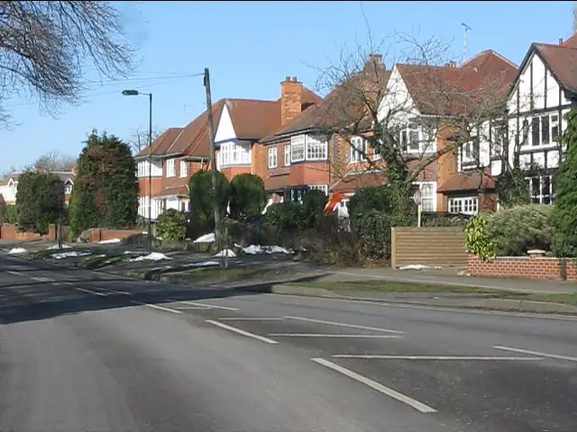

Recent cases in Solihull
- Rowood Drive, off Lode Lane, November 2025. West Midlands Police said the Solihull Priority Crime Team and the Leos (Lyndon, Elmdon, Olton and Silhill) neighbourhood team found more than 50 plants and growing equipment. The electricity meter had been bypassed to power the grow.
- Oxford Grove, Chelmsley Wood, January 2026. Officers seized 29 plants, which Birmingham Live said were worth around £30,000, from a house in a residential road near Alcott Wood. The plants were destroyed.
- Dovehouse Lane, and a national network. In June 2025 the head of a gang that ran at least eight cannabis farms across the Midlands, the North West and north Lincolnshire was convicted after a National Crime Agency investigation. One of the farms was a house in Dovehouse Lane, Solihull. The Solihull Observer reported that he sourced properties by posing as a property developer, buying or renting them, and sometimes put scaffolding up so it looked like building work.
That last case matters to landlords. A tenant who says they are a developer or a company, pays well and asks for little contact is not always what they seem. Our guide to the signs of a cannabis farm in a rental lists the referencing red flags.
Two very different housing stocks
North Solihull, around Chelmsley Wood, Kingshurst, Smith's Wood and Fordbridge, is mostly post-war estates, many first built by Birmingham to rehouse families from the inner city: houses, maisonettes and flats, many of them now privately let. Points to watch:
- Flats and maisonettes share structure and services. If the grow was in a leasehold flat, tell the freeholder or managing agent. Holes in party walls, ceilings and shared ducts affect other homes, and the lease may decide who repairs what.
- Neighbours are close. Waste coming out of a flat goes through communal areas, so ask the specialist how they will do it discreetly and safely.
South Solihull, from Shirley and Olton to Knowle, Dorridge and Hockley Heath, is mostly interwar semis and larger detached houses with lofts, garages and long gardens. Here:
- Check every space. Lofts, garages and garden buildings are all used for grows.
- Use the driveway. A skip on private land does not need a highway permit; one on the road does.
- Rural edges count too. Around Meriden and Balsall Common in CV7, barns, stables and commercial units can be let with little day-to-day oversight.
Licensing in Solihull
At the time of writing, Solihull Council runs mandatory HMO licensing only, for homes shared by five or more people from two or more households. We could not find an additional or selective licensing scheme in force. The council's licence fee is £1,075, and managers and licence holders must have a Disclosure and Barring Service check. If a licensed HMO was used for a grow, the repairs must bring it back to licence standard, and you should check your licence conditions for any duty to tell the council about changes.
Single-household lets do not need a licence in Solihull, but the property must still be safe to let. After a grow, that means a new electrical report, damp and mould dealt with, and the paperwork kept.
Which council is it?
B postcodes cross boundaries here. Parts of B26 and B36 are Birmingham, not Solihull, and some CV7 addresses are in Coventry or Warwickshire. Licensing, environmental health and building control sit with the borough the property is actually in, so check the council tax bill first. Solihull Council's main number is 0121 704 8000.
Who to contact in Solihull
- West Midlands Police: 101, or 999 in an emergency.
- 105 for the meter and the supply.
- Solihull Council: private housing and HMO licensing (linked below).
- Stay Energy Safe to report suspected energy theft anonymously.
Questions landlords ask
Does Solihull have selective licensing?
Not at the time of writing. Solihull runs mandatory HMO licensing for homes shared by five or more people from two or more households. Check Solihull Council's housing pages for the current position.
Do you cover Chelmsley Wood, Kingshurst and Smith's Wood?
Yes. North Solihull is part of the area we cover. Give us the full postcode, because B36 is split between Solihull and Birmingham.
The grow was in a leasehold flat. Who deals with the shared parts?
Usually the freeholder or managing agent, but the lease decides. Tell them straight away, because damage to party walls, ceilings or shared services affects other flats.
What we can arrange in Solihull
Guides for Solihull landlords
Other areas: Birmingham, Sutton Coldfield, Wolverhampton, Coventry, Walsall, Dudley, Sandwell, West Bromwich.